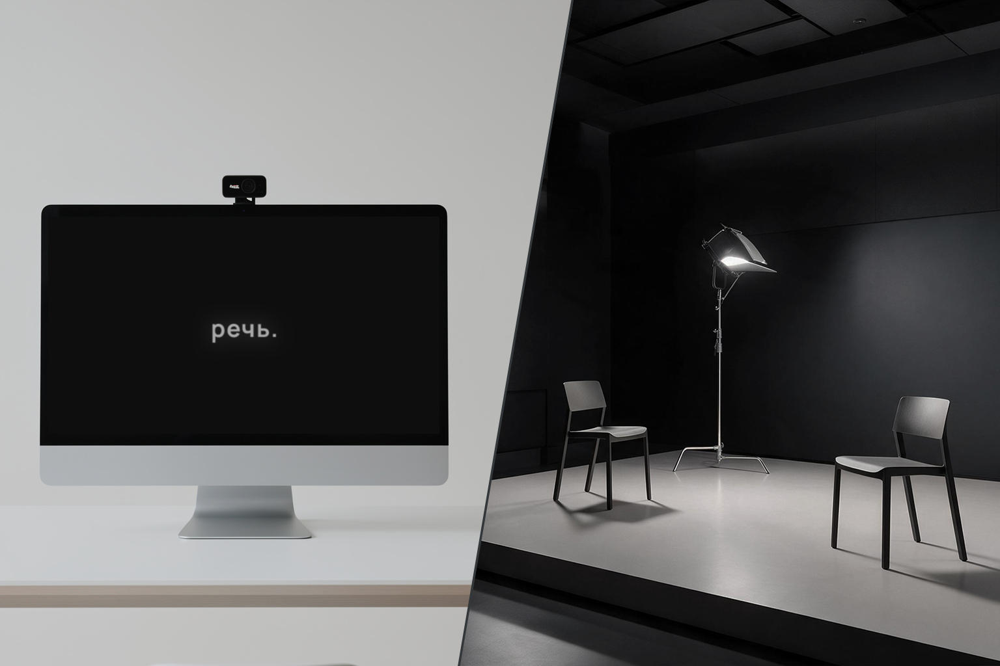
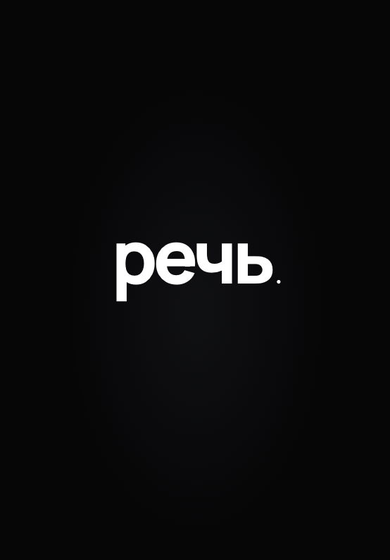

ДИКЦИЯ, ГОЛОС, КОММУНИКАЦИЯ,
ОРАТОРСКОЕ ИСКУССТВО
Программа собирается под вашу задачу.
Цель
Записываем и анализируем вашу речь, определяем сильные стороны и то, что можно улучшить.
Практика
Развиваем нужные навыки и переносим их в реальные тексты и ситуации.
Результат
Слушаем запись «до и после» и слышим разницу. Навык остаётся с вами.
Основные запросы
- Уверенная речь
- Чёткая дикция
- Сильный и выразительный голос
- Публичные выступления
- Речь для видео, подкастов и эфиров
- Деловые переговоры и совещания

Обо мне
Дмитрий
Фролов
Окончил РГИСИ (кафедра актёрского искусства).
Более 10 лет специализируюсь на развитии голоса, речи и навыков эффективной коммуникации.
Среди моих учеников — люди самых разных профессий: руководители компаний, юристы, предприниматели, IT-специалисты, преподаватели. В основе нашей работы — сочетание фундаментальных методик русской театральной школы и современных инструментов ораторского искусства.
Контакты
Видео из блога · впишите ID ролика